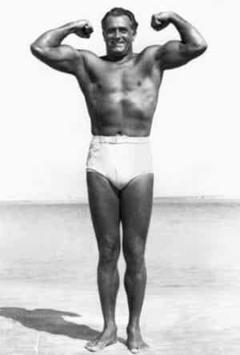
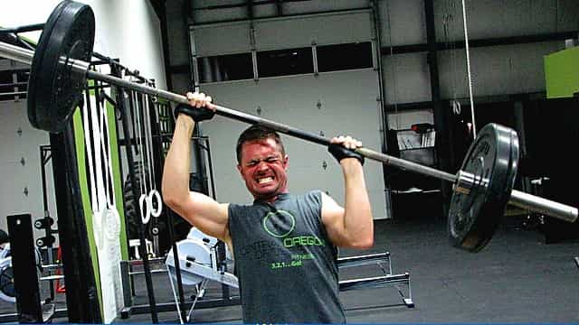

Mr. Luthra is an author and artist who writes about news, fitness, culture, and anything else that meets his interests. If you like his style, visit The Straightforward Voice, where you can find more FREE content.


Depending on your situation, going to the gym may not be feasible for time or financial reasons. That’s no excuse however, for not getting fit. Since ancient times, men have trained without weights outside in nature and were in much better shape than today’s keyboard pusher.
Pushups, squats, and pull ups are the powerful trio that have been historically used for overall muscular development. In many cases, this type of training is superior to weights, because most lift improperly, and the strength gained from calisthenics carries over to weights anyway. This challenge is multiplied by not eating any meat products.
Training should be quick and focused. Experienced lifters are in and out of gyms without indulging in distractions. There are three rules to follow for results if you want big gains as a vegetarian body builder…
Intense brief training. Two sets at most should be performed for high reps, ideally ten or more. You’ll want to use a variation you can do at least 15-20 times. Rest five minutes or longer in between sets. You’ll also reduce training frequency for recovery.
Nutritious food. You should be more meticulous about eating high-quality food products, since you can’t just eat a big steak and call it a day. I’ll explain more on this below.
Rest. Many neglect adequate quality sleep. You need 8-10 hours of sleep with odd naps here and there. Go to bed early, it’ll work like steroids. Reduce cardio to just 10-30 second sprints 1-2x a week. Rest for two days minimum.
One of the hardest tasks professional coaches have when dealing with top athletes is preventing them from doing too much. We’re not mutant freaks, we’re human beings. It doesn’t take much to exhaust the muscles for growth.

Charles Atlas became the most perfectly developed man without weights and even today, Indian wrestlers in the jungles of India still train mostly with yoga and calisthenics. You can quickly build a foundation with floor exercises alone.
Gymnasts are in wonderful shape, and their physiques look like Greek statues. So there’s no shame in training exclusively with calisthenics.
Yes, I’m vegetarian, but I don’t necessarily advocate it to others. Many mistakenly believe getting off meat somehow makes you more healthy and spiritual, but I don’t concur to this false sense of superiority.
For those of you who want to switch or at least want to have more options other than meat as a protein source, you can consume the following:
Nuts – almonds, cashews, and walnuts increase free testosterone and supply healthy fat. They’re also good for the brain.
Diary – milk, cheese, cottage cheese, and yogurt. And for all those vegan nuts who think it is wrong, one of the first things I learned in genetics class was that all lactating mammalian species have the biological instinct to nurture the young of even different mammalian species.
Beans – chickpeas, kidney beans, black beans, and chana are all packed with protein and combine well with rice.
Seeds – flax, chia, and sesame are great and can be mixed with nuts.
Peas – contains protein and combines well with rice or noodles.
Other important foods like spinach, kale, and quinoa, are equally important as they supply iron, vitamins, and minerals. Combining foods such as rice/quinoa with beans, nuts and seeds, and topping cheese on dishes are very effective ways to easily get enough protein.
Every morning, India’s vegetarian wrestlers work hard by performing various calisthenics and following strict principles. While the rest of the world binges on trash TV, alcohol, and drugs, these guys are getting stronger and maintain spiritual practice.
Personally, I favor calisthenics, because it’s faster and can be done anywhere. I get it done in the time it takes me to travel to the gym, and I get better results. After hitting the weights again, the barbell flew off the floor and I felt I wasn’t even getting a workout from my old poundage. That’s the effectiveness of body weight training.
For starters…
This is not to say all gyms are bad, especially the old school ones. If you can get the same, if not better, results with calisthenics without having to leave your house, why bother with a gym? You save time, money, and headache.
Whenever I enter a gym, I’m always displeased with lack of free weights/barbells. Everything is all machines, cables, and exercise bikes. I can’t train seriously next to treadmills or step climbers.

Most guys are there desperately trying to show off, struggling to heave heavy weights to impress babes while they themselves are there to boost their ego. That combined with the pop music, the smell, the dirty sweat-infested equipment, the giant fans blowing dust in your face because people can’t take the heat, the air conditioning, and the big screen TVs, all make it not for me. I simply can’t take it.
That’s what I’m talking about, Vasily Alexeev cleaning and jerking in water, that’s real training!
While I was in Florida some years ago, I built up to a solid 180lbs using nothing but pushups, squats, and door pull-ups (wouldn’t advise unless yours is study). A guy I knew there at the time referred to me as “Mr. Muscle”. I didn’t have much to eat either, a diet consisting of peanut butter banana, rice with beans, and the occasional pizza.
Later, I saw a long lost acquaintance in Hawaii. He commented on my physique and asked if I had been lifting weights even though I hadn’t touched a single one. So you see, anyone can build muscle mass without going to gym on a vegetarian diet as it’s been done in the past.
Over the years, I’ve refined techniques ave the best results and found that two sets of high reps does the trick, the first being a little over 50% of your max and the second less challenging set to avoid failure. Rest two days, and then add a rep on your sets next training day and continue progressing. It starts slow, but quickly becomes challenging. You can read more about it in my book.
Summer is here, so now is the perfect time to get into beach body shape.
Read More: The Most Efficient Rep Range To Build Muscle